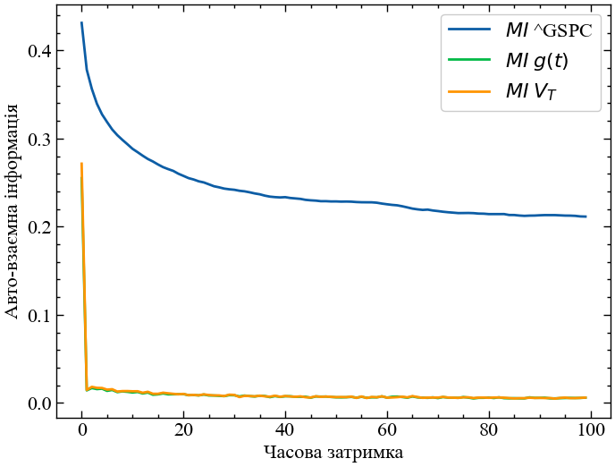
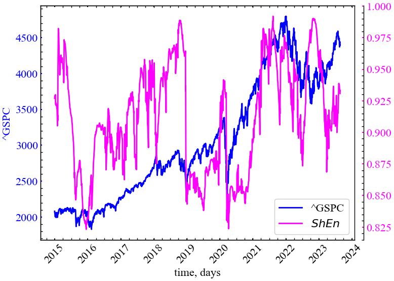
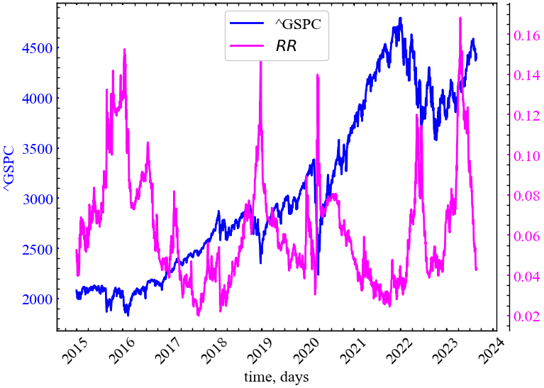
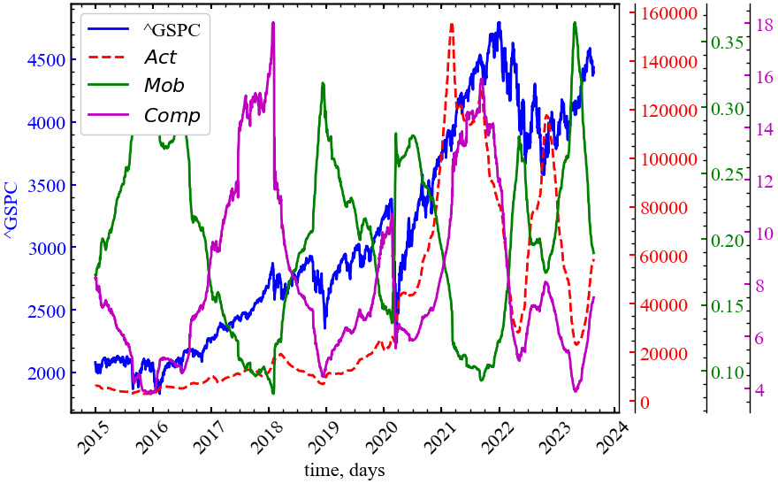

import matplotlib.pyplot as plt
import numpy as np
import neurokit2 as nk
import yfinance as yf
import pandas as pd
import scienceplots
from tqdm import tqdm
%matplotlib inline5 Лабораторна робота № 4
Тема. Інформаційні методи оцінки складності.
Мета. Навчитися використовувати основні показники складності з теорії інформації для аналізу часових рядів.
5.1 Теоретичні відомості
5.1.1 Складність. Кількісні міри складності. Інформаційні методи оцінки складності.
Дане століття називають століттям складності. Сьогодні питання “що таке складність?” вивчають фізики, біологи, математики і інформатики, хоча при теперішніх досягненнях у розумінні оточуючого світу, однозначної відповіді на це питання немає.
З цієї причини, відповідно до ідеї І. Пригожина, будемо досліджувати прояви складності системи, застосовуючи при цьому сучасні методи кількісного аналізу складності.
Серед таких методів на увагу заслуговують: - інформаційно-ентропійні; - засновані на теорії хаосу; - скейлінгово-мультифрактальні.
Зрозуміло, виходячи з різної природи методів, покладених в основу формування міри складності, вони приділяють певні вимоги до часових рядів, що слугують вхідними даними. Наприклад, перші дві групи методів вимагають стаціонарності вхідних даних. При цьому мають різну чутливість до таких характеристик, як детермінованність, стохастичність, причинність та кореляції. Тому у подальшому, порівнюючи комплексно ефективність різних показників складності, на вказані обставини ми будемо звертати увагу, підкреслюючи спеціально застосовність того чи іншого показника для характеристики різних сторін складності досліджуваних систем.
Розгляд першої групи методів почнемо з добре відомої міри складності, запропонованої А. Колмогоровим.
Колмогорівська складність. Поняття колмогорівської складності (або, як ще говорять, алгоритмічної ентропії) з’явилося в 1960-і роки на стику теорії алгоритмів, теорії інформації і теорії ймовірностей.
Ідея А. Колмогорова полягала в тому, щоб вимірювати кількість інформації, що міститься в індивідуальних скінчених об’єктах (а не у випадкових величинах, як у шеннонівській теорії інформації). Виявилось, що це можливо (хоча лише з точністю до обмеженого доданку). А. Колмогоров запропонував вимірювати кількість інформації в скінчених об’єктах за допомогою теорії алгоритмів, визначивши складність об’єкту як мінімальну довжину програми, що породжує цей об’єкт. Дане визначення стало базисом алгоритмічної теорії інформації, а також алгоритмічної теорії ймовірностей: об’єкт вважається випадковим, якщо його складність наближена до максимальної.
Що ж собою являє колмогорівська складність і як її виміряти? На практиці ми часто стикаємося з програмами, які стискують файли (для економії місця в архіві). Найбільш поширені називаються zip, gzip, compress, rar, arj та інші. Застосувавши таку програму до деякого файлу (з текстом, даними, програмою), ми отримуємо його стислу версію (яка, як правило, коротше початкового файлу). За нею можна відновити початковий файл з допомогою парної програми-“декомпресора”. Отже, у першому наближенні колмогорівську складність файлу можна описати як довжину його стислої версії. Тим самим файл, що має регулярну структуру і добре стискуваний, має малу колмогорівську складність (порівняно з його довжиною). Навпаки, погано стискуваний файл має складність, близьку до довжини.
Припустимо, що ми маємо фіксований спосіб опису (декомпресор) \(D\). Для даного слова \(x\) розглянемо всі його описи, тобто всі слова \(y\), для яких \(D(y)\) визначене \(і\) рівне \(x\). Довжину найкоротшого з них \(l(y)\) і називають колмогорівською складністю слова \(x\) при даному способі опису \(D\):
\[ KS_{D}(x) = \min\{l(y)\,|\,D(y)=x\}, \]
де \(l(y)\) позначає довжину слова \(y\). Індекс \(D\) підкреслює, що визначення залежить від вибору способу \(D\).
Можна показати, що існують оптимальні способи опису. Спосіб опису тим краще, чим він коротше. Тому природно дати таке визначення: спосіб \(D_1\) не гірше за спосіб \(D_2\), якщо \(KS_{D_1}(x) \leq KS_{D_2}(x)+c\) при деякому \(c\) і при всіх \(x\).
Отже, за Колмогоровим, складність об’єкту (наприклад, тексту — послідовності символів) — це довжина мінімальної програми яка виводить даний текст, а ентропія — це складність, що ділиться на довжину тексту. На жаль, це визначення чисто умоглядне. Надійного способу однозначно визначити цю програму не існує. Але є алгоритми, які фактично якраз і намагаються обчислити колмогорівські складність тексту і ентропію.
5.1.2 Оцінка складності Колмогорова за схемою Лемпела-Зіва
Універсальна (в сенсі застосовності до різних мовних систем) міра складності кінцевої символьної послідовності була запропонована Лемпелем і Зівом. У рамках їх підходу складність послідовності оцінюється числом кроків процесу, що її породжує. Припустимими (редакційними) операціями при цьому є:
- генерація символу (необхідна, як мінімум, для синтезу елементів алфавіту) і
- копіювання “готового” фрагмента з передісторії (тобто з уже синтезованої частини тексту).
Нехай \(\Sigma\) — скінчений алфавіт, \(S\) — текст (послідовність символів), складений з елементів \(\Sigma\); \(S[i]\) — \(i\)-й символ тексту; \(S[i:j]\) — фрагмент тексту з \(i\)-го по \(j\)-й символ включно \((i<j)\); \(N=|S|\) — довжина тексту \(S\). Тоді схему синтезу послідовності можна представити у вигляді конкатенації
\[ H(S)=S[1:i_1]S[i_1+1:i_2]...S[i_{k-1}+1:i_k]...S[i_{m−1}+1:N], \tag{1} \]
де \(S[i_{k−1}+1:i_k]\) — фрагмент \(S\), породжуваний на \(k\)-му кроці, а $m=m_{H}(S) — число кроків процесу. З усіляких схем породження \(S\) обирається мінімальна за числом кроків. Таким чином, складність послідовності \(S\) за Лемпелем-Зівом
\[ c_{LZ}(S) = \min_{H}\{ m_{H}(S) \}. \]
Мінімальність числа кроків забезпечується вибором для копіювання на кожному кроці максимально довгого прототипу з передісторії. Якщо позначити через \(j(k)\) номер позиції, з якої починається копіювання на \(k\)-му кроці, то довжина фрагмента копіювання
\[ l_{j(k)} = i_k - i_{k-1} - 1 = \max_{j \leq i_{k-1}}\{ l_{j} : S[i_{k-1}+1:i_{k-1}+l_j]=S[j:j+l_{j}-1] \}, \tag{2} \]
а сам \(k\)-й компонент складнісного розкладання (1) можна записати у вигляді
\[ S[i_{k-1}+1:i_{k}] = \begin{cases} S[j(k):j(k)+l_{j(k)}-1] & \textrm{if} \; j(k) \neq 0, \\ S[i_{k-1}+1] & \textrm{if} \; j(k) = 0. \end{cases} \tag{3} \]
Випадок \(j(k) = 0\) відповідає ситуації, коли в позиції \(i_{k−1}+1\) стоїть символ, який раніше не зустрічався. При цьому ми застосовуємо операцію генерації символу.
Будемо знаходити складність за Лемпелем-Зівом (LZ) для часового ряду, який являє собою, наприклад, щоденні значення індексу фондового ринку. Для дослідження динаміки LZ та порівняння з іншими фондовими ринками будемо знаходити дану міру складності для підряду фіксованої довжини (вікна). Для цього обчислимо логарифмічні прибутковості та перетворимо їх у послідовність бітів. При цьому можна задавати кількість станів, які диференційовані (система числення). Так, для двох різних станів маємо 0, 1, для трьох — 0, 1, 2 і т.д. Для двійкової системи кодування буде задаватися поріг по середньому значенню і стани, наприклад, прибутковостей (ret) кодуватимуться наступним чином:
\[ ret = \begin{cases} 0, & ret_t < \langle ret \rangle \\ 1, & ret_t > \langle ret \rangle. \end{cases} \tag{4} \]
Також можна визначити так звану пермутаційну складність Лемпеля-Зіва (PLZС). У даному випадку би будемо опиратись на процедуру реконструкції фазового простору, що згадувалась в лабораторних 2 і 3. Згідно пермутаційній процедурі ми будемо брати фрагмент ряду довжини \(m\), що слугує розмірностю реконструйованого атрактора, та замінюємо кожне значення ряду його порядковим індексом. На подальшому ресунку представлено часовий ряд та його можливі порядкові шаблони:

Алгоритм Лемпеля-Зіва виконує дві операції: (1) додає новий біт в уже існуючу послідовність; (2) копіює вже сформовану послідовність. Алгоритмічна складність представляє собою кількість таких операцій, необхідних для формування заданої послідовності.
Для випадкової послідовності довжини \(n\) алгоритмічна складність обчислюється за виразом \(LZC_r = n / \log(n)\). Тоді відносна алгоритмічна складність знаходиться як відношення отриманої складності до складності випадкової послідовності: \(LZC = LZC / LZC_{r}\).
Однак навіть цього підходу може бути недостатньо. Справа в тому, що складні сигнали проявляють притаманну їм складність на різних просторових і часових масштабах, тобто мають масштабно інваріантні властивості. Вони, зокрема проявляються через степеневі закони розподілу. Тому розрахунки алгоритмічної складності на “поверховому” масштабі сигналу можуть бути неприйнятними і призводити до помилкових висновків.
Для подолання таких труднощів використовуються мультимасштабні методи, до розгляду яких ми і переходимо.
5.1.3 Процедура грануляції для мультискейлінгового дослідження часових рядів. Мультимасштабні міри складності
Ідея цієї групи методів включає дві послідовно виконувані процедури:
- процес “грубого дроблення” (coarse graining — “грануляції”) початкового часового ряду — усереднення даних на сегментах, що не перетинаються, розмір яких (вікно усереднення) збільшуватиметься на одиницю при переході на наступний за величиною масштаб;
- обчислення на кожному з масштабів певного (до сих пір мономасштабного) показника складності.
Процес “грубого дроблення” (“грануляція”) полягає в усереднені послідовних відліків ряду в межах вікон, що не перетинаються, а розмір яких \(\tau\) — збільшується при переході від масштабу до масштабу. Кожен елемент “гранульованого” часового ряду \(y_{j}^{\tau}\) знаходиться у відповідності до виразу:
\[ y_{j}^{\tau} = \frac{1}{\tau}\sum_{i=(j-1)\tau+1}^{j\tau}x_i, \; 1 \leq j \leq N/\tau, \]
де \(\tau\) характеризує фактор масштабування. Довжина кожного “гранульованого” ряду залежить від розміру вікна \(і\) рівна \(N/\tau\). Для масштабу рівного 1 “гранульований” ряд просто тотожний оригінальному.

Бібліотека neurokit2 представляє метод для обчислення як мономасштабного показника складності Лемпеля-Зіва, так і його мультимасштабного аналогу.
Синтаксис мономасштабної процедури виглядає наступним чином:
complexity_lempelziv(signal, delay=1, dimension=2, permutation=False, symbolize='mean', **kwargs)
Параметри
- signal (Union[list, np.array, pd.Series]) — сигнал (тобто часовий ряд) у вигляді вектора значень.
- delay (int) — часова затримка, \(\tau\). Використовується лише тоді, коли
permutation=True. - dimension (int) — розмірність вкладень, \(m\). Використовується лише коли
permutation=True. - permutation (bool) — якщо значення
True, поверне складність Лемпеля-Зіва на основі порядкових патернів. - symbolize (str) — використовується тільки коли
permutation=False. Метод перетворення неперервного сигналу на вході у символьний (дискретний) сигнал. За замовчуванням присвоює 0 та 1 значенням нижче та вище середнього. Може мати значенняNone, щоб пропустити процес (якщо вхідний сигнал вже є дискретним). Можна скористатися методомcomplexity_symbolize()для використання іншої процедури символізації ряду. - kwargs — інші аргументи, які передаються до
complexity_ordinalpatterns()(якщоpermutation=True) абоcomplexity_symbolize().
Повертає
- lzc (float) — складність Лемпеля-Зіва (LZC).
- info (dict) — словник, що містить додаткову інформацію про параметри, які використовуються для обчислення LZC.
Синтаксис мультимасштабної процедури вже інший:
entropy_multiscale(signal, scale='default', dimension=3, tolerance='sd', method='MSEn', show=False, **kwargs)
Параметри
- signal (Union[list, np.array, pd.Series]) — сигнал (тобто часовий ряд) у вигляді вектора значень або датафрейму.
- scale (str або int або list) — список масштабних коефіцієнтів, що використовуються для процедури крос-грануляції часового ряду. Якщо значення
"default", буде використаноrange(len(signal) / (dimension + 10)). Якщо"max", використовуватиме всі масштаби до половини довжини сигналу. Якщо ціле число, створить діапазон до вказаного цілого числа. - dimension (int) — розмірність вкладення, \(m\).
- tolerance (float) — поріг пропускання \(\varepsilon\) (часто позначається як \(r\)), відстань, на якій дві точки даних вважаються подібними. Якщо
"sd"(за замовчуванням), буде встановлено значення \(0.2 \cdot SD_{signal}\). - method (str) — яку версію мультимасштабного показника обчислювати. Переважна кількість показників за цим методом відповідають саме ентропійним підходам. Нас цікавитиме саме
"LZC". - show (bool) — візуалізувати залежність показника від масштабу.
- kwargs — необов’язкові аргументи.
Повертає
- float — точкова оцінка мультимасштабного показника окремого часового ряду, що відповідає площі під кривою значень цього показника, яка, по суті, є сумою вибіркових значень, наприклад,
"LZC"в діапазоні масштабних коефіцієнтів. - dict — словник, що містить додаткову інформацію про параметри, які використовуються для обчислення мультимасштабного показника. Значення показника, що відповідають кожному фактору
"Scale", зберігаються під ключем"Value".
5.1.4 Шеннонівська складність
Ентропійний аналіз часових рядів за допомогою ентропійних показників різного роду буде проведено у наступних роботах. Зараз же ми розглянемо найпростішу з ентропій — ентропію Шеннона та порівняємо її можливості кількісно оцінювати складність часових послідовностей у порівнянні з мірою Лемпеля-Зіва.
Ентропія Шеннона — це статистичний квантифікатор, який широко використовується для характеристики складних процесів. Він здатний виявляти аспекти нелінійності в досліджуваних сигналах, сприяючи більш надійному поясненню нелінійної динаміки різних точок аналізу, що, в свою чергу, покращує розуміння природи складних систем, які характеризуються складністю та нерівноважністю. Окрім складності та нерівноважності, більшість, але не всі, складні системи також характеризуються неоднорідним розподілом зв’язків. Поняття ентропії було використано Шенноном в теорії інформації для передачі даних.
Ентропія - це міра невизначеності та випадковості в системі. Якщо припустити, що всі наявні дані належать до одного класу, то неважко передбачити клас нових даних. У цьому випадку ентропія дорівнює 0. Будучи величиною між 0 і 1, коли всі ймовірності рівні, ентропія набуває найбільшого значення. Невизначеність, що виникає, коли подія \(E\) відбувається з ймовірністю \(p\), можна позначити як \(S(p)\). Якщо ймовірність появи класу дорівнює 1, тоді ентропія мінімальна, \(S(1) = 0\). Відповідно до концепції Шеннона, якщо у нас наявні ймовірності реалізації певної події \(p_1, p_2, p_3, ..., p_n\), на виході отримується кількість інформації, що необхідна для опису цієї події. Тоді, Шеннонівська ентропія може бути визначена як
\[ S = -\sum_{i=1}^{n}p_i \ln p_{i}. \]
Синтаксис методу для розрахунку Шеннонівської ентропії виглядає наступним чином:
entropy_shannon(signal=None, base=2, symbolize=None, show=False, freq=None, **kwargs)
Параметри
- signal (Union[list, np.array, pd.Series]) — сигнал (тобто часовий ряд) у вигляді вектора значень.
- base (float) — основа логарифму, що за замовчуванням дорівнює 2, що дає одиницю в бітах. Зауважте, що
scipy.stats.entropy()за замовчуванням використовує число Ейлера (np.e) (натуральний логарифм), що дає міру інформації, виражену в натах. - symbolize (str) — метод приведення неперервного сигналу на вході у символьний (дискретний) сигнал. За замовчуванням дорівнює нулю, що пропускає процес (і припускає, що вхідні дані вже є дискретними).
- show (bool) — якщо значення
True, виводить дискретність сигналу. - freq (np.array) — замість сигналу можна надати вектор ймовірностей.
- kwargs — необов’язкові аргументи. Наразі не використовуються.
Повертає
- shanen (float) — Шеннонівську ентропію.
- info (dict) — словник, що містить додаткову інформацію про параметри, які використовуються для обчислення Шеннонівської ентопії.
5.1.5 Інформація Фішера
Інформацію Фішера було введено Р. А. Фішером у 1925 році як міру “внутрішньої точності” в теорії статистичних оцінок. Вона є центральною для багатьох статистичних галузей, що виходять далеко за межі теорії складності. Даний показник вимірює кількість інформації, яку спостережувана випадкова величина несе про невідомий параметр. В аналізі складності вимірюється кількість інформації, яку система несе “про себе”. Він базується на розкладанні за сингулярним значенням реконструйованого фазового простору. Значення показника Фішера зазвичай антикорельоване з іншими показниками складності (чим більше інформації система приховує про себе, тим більш передбачуваною і, відповідно, менш складною вона є).
Інформацію Фішера можна визначити, використовуючи метод fisher_information() бібліотеки neurokit2. Її синтаксис виглядає наступним чином:
fisher_information(signal, delay=1, dimension=2)
Параметри
- signal (Union[list, np.array, pd.Series]) — сигнал (тобто часовий ряд) у вигляді вектора значень.
- delay (int) — затримка в часі, \(\tau\).
- dimension (int) — розмірність векторів фазового простору, \(m\).
Повертає
- fi (float) — обчислена міра інформації Фішера.
- info (dict) — словник, що містить додаткову інформацію про параметри, які використовуються для обчислення інформації Фішера.
5.1.6 Складність та параметри Хьорта
Параметри Хьорта — це показники статистичних властивостей, які спочатку були введені Хьортом (Hjorth, 1970) для опису загальних характеристик сигналів електроенцифалограми у кількох кількісних термінах, але які можуть бути застосовані до будь-якого часового ряду. Параметрами є активність, рухливість і складність:
- Параметр активності (\(Activity\)) — це просто дисперсія сигналу, яка відповідає середній потужності сигналу (якщо його середнє значення дорівнює 0).
\[ Activity = \sigma^{2}_{signal}. \]
- Параметр рухливості (\(Mobility\)) являє собою середню частоту або частку середньоквадратичного відхилення спектра потужності. Він визначається як квадратний корінь з дисперсії першої похідної сигналу, поділений на дисперсію сигналу.
\[ Mobility = \frac{\sigma_{dd}/\sigma_{d}}{Complexity}. \]
- Параметр складності (\(Complexity\)) дає оцінку смуги пропускання сигналу, яка вказує на схожість форми сигналу з чистою синусоїдою (для якої значення сходиться до 1). Іншими словами, це міра “надмірної деталізації” по відношенню до “найм’якшої” можливої форми кривої. Параметр “Складність” визначається як відношення рухливості першої похідної сигналу до рухливості самого сигналу.
\[ Complexity = \frac{\sigma_d}{\sigma_{signal}}, \]
де \(d\) та \(dd\) представляють перші та другі похідні сигналу, відповідно.

Бібліотека neurokit2 представляє метод для отримання відповідних показників. Її синтаксис виглядає наступним чином:
complexity_hjorth(signal)
Параметри
- signal (Union[list, np.array, pd.Series]) — сигнал (тобто часовий ряд) у вигляді вектора значень.
Повертає
- hjorth (float) — показник складності Хьорта.
- info (dict) — словник, що містить додаткові показники Хьорта, такі як
"Mobility"та"Activity".
5.1.7 Час декореляції
Час декореляції (decorrelation time, DT) визначається як час (у відліках) першого перетину нуля функції автокореляції. Коротший час декореляції відповідає менш корельованому сигналу. Наприклад, зменшення часу декореляції в сигналах електроенцифалограми спостерігається перед нападами, що пов’язано зі зменшенням потужності низьких частот.
Бібліотека neurokit2 представляє функціонал для визначення часу декореляції, а саме метод complexity_decorrelation(). Її синтаксис є наступним:
complexity_decorrelation(signal)
Параметри
- signal (Union[list, np.array, pd.Series]) — сигнал (часовий ряд) у вигляді вектора значень.
Повертає
- float — час декореляції.
- dict — словник, що містить додаткову інформацію про додаткові показники.
5.1.8 Відносна грубість (нерівність, шорсткість)
Відносна шорсткість — це відношення локальної дисперсії (автоковаріації з лагом 1) до глобальної дисперсії (автоковаріації з лагом 0), яке можна використовувати для класифікації різних “шумів”. Його також можна використовувати як індекс для перевірки застосовності фрактального аналізу (показники фрактальності будуть використовуватись у наступних роботах).
Синтаксис даного методу в бібліотеці neurokit2 виглядає наступним чином:
complexity_relativeroughness(signal, **kwargs)
Параметри
- signal (Union[list, np.array, pd.Series]) — сигнал (часовий ряд) у вигляді вектора значень.
- kwargs (optional) — інші аргументи, що потребуються методу
nk.signal_autocor().
Повертає
- rr (float) — значення відносної грубості.
- info (dict) — словник, що містить інформацію відносно параметрів, що використовувались для обчислення показника грубості.
5.1.9 Взаємна інформація
Коли йдеться про виявлення зв’язків між змінними, ми часто використовуємо кореляцію Пірсона. Проблема полягає в тому, що цей показник знаходить лише лінійні зв’язки, що іноді може призвести до неправильної інтерпретації зв’язку між двома змінними. Тим не менш, інші статистичні методи вимірюють нелінійні зв’язки, такі як взаємна інформація (mutual information, MI).
Взаємна інформація між двома випадковими величинами вимірює нелінійний зв’язок між ними. Крім того, вона показує, скільки інформації можна отримати з випадкової величини, спостерігаючи за іншою випадковою величиною.
Вона тісно пов’язана з поняттям ентропії. Тобто, зменшення невизначеності випадкової величини пов’язане з отриманням інформації з іншої випадкової величини. Отже, високе значення взаємної інформації вказує на велике зменшення невизначеності, тоді як низьке значення вказує на мале зменшення. Якщо взаємна інформація дорівнює нулю, це означає, що дві випадкові величини є незалежними.
Взаємну інформацію можна розрахувати наступним чином:
\[ I(X; Y) = \sum_{y \in Y}\sum_{x \in X}p(x, y) \cdot \log{\left( \frac{p(x,y)}{p(x)p(y)} \right)}, \]
де \(p(x)\) та \(p(y)\) ймовірності спостереження окремо \(x\) або \(y\), а \(p(x,y)\) ймовірність спостереження одночасно \(x\) та \(y\).
Основна відмінність між кореляцією та взаємною інформацією полягає в тому, що кореляція є мірою лінійної залежності, тоді як взаємна інформація вимірює загальну залежність (включаючи нелінійні зв’язки). Тому взаємна інформація виявляє залежності, які не залежать тільки від коваріації. Таким чином, взаємна інформація дорівнює нулю, коли дві випадкові величини є строго незалежними.
Бібліотека neurokit2 представляє інструментарій для знаходження взаємної інформації між двома сигналами \(x\) та \(y\). У даній роботі ми спробуємо віднайти взаємну інформацію як між двома часовими рядами, так і авто-взаємну інформацію, подібно до автокореляції.
Синтаксис потрібної нам процедури виглядає наступним чином:
mutual_information(x, y, method='varoquaux', bins='default', **kwargs)
Параметри
- x (Union[list, np.array, pd.Series]) — масив значень.
- y (Union[list, np.array, pd.Series]) — масив значень.
- method (str) — метод для обчислення взаємної інформації:
"nolitsa","varoquaux","knn","max". - bins (int) — кількість бінів гістограми. Використовується лише для
"nolitsa"та"varoquaux". Якщо"default", кількість бінів оцінюється згідно методики Hacine-Gharbi (2018). - kwargs — додаткові ключові аргументи для обраного методу.
Повертає
- float — розрахована взаємна інформація.
Існують різноманітні підходи до розрахунку взаємної інформації:
- nolitsa: Класична взаємна інформація (трохи швидше, ніж метод
"sklearn"). - varoquaux: Застосовує фільтр Гауса до об’єднаної гістограми. Величину згладжування можна налаштовувати за допомогою аргументу
sigma(за замовчуваннямsigma=1). - knn: Непараметрична (тобто не заснована на біннінгу) оцінка за найближчими сусідами. Додаткові параметри включають
k(за замовчуванням,k=3), кількість найближчих сусідів для використання. - max: Максимальний коефіцієнт взаємної інформації, тобто \(MI\) є максимальним при певній комбінації кількості бінів.
Існує безліч різноманітних показників складності, що базуються на теорії інформації та інших парадигах, які ми ще представлятимемо в подальшому. Розглянемо ефективність використання зазначених показників у якості індикаторів або індикаторів-передвісників крахових подій.
5.2 Хід роботи
Спочатку імпортуємо необхідні модулі для подальшої роботи:
І виконаємо налаштування рисунків для виведення:
plt.style.use(['science', 'notebook', 'grid']) # стиль, що використовуватиметься
# для виведення рисунків
params = {
'figure.figsize': (8, 6), # встановлюємо ширину та висоту рисунків за замовчуванням
'font.size': 22, # розмір фонтів рисунку
'lines.linewidth': 2, # товщина ліній
'axes.titlesize': 'small', # розмір титулки над рисунком
"font.family": "sans-serif", # сімейство стилів підписів
"font.serif": ["Times"], # стиль підпису
'savefig.dpi': 300 # якість збережених зображень
}
plt.rcParams.update(params) # оновлення стилю згідно налаштуваньЦього разу розглянему можливість побудови індикаторів-передвісників на прикладі фондового індексу S&P 500, але, окрім цього, додамо ще Біткоїн для розрахунку взаємної інформації між фондовим ринком та криптовалютним. Очевидно, що фондовий індекс S&P 500 мав би проіснувати довше за Біткоїн. До того ж, криптовалютний ринок працює безперервно на відміну від фондового, а тому треба буде об’єднати значення двох активів за тими датами що співпадають.
Виконуємо зчитування фондового індексу:
symbol_1 = '^GSPC' # Символ першого індексу
start_1 = "2014-01-01" # Дата початку зчитування даних
end_1 = "2023-08-24" # Дата закінчення зчитування даних
data_1 = yf.download(symbol_1, start_1, end_1) # вивантажуємо дані
time_ser_1 = data_1['Adj Close'].copy() # зберігаємо саме ціни закриття
xlabel = 'time, days' # підпис по вісі Ох
ylabel_1 = symbol_1 # підпис по вісі Оу[*********************100%%**********************] 1 of 1 completedВиконуємо зчитування криптовалютного індексу:
symbol_2 = 'BTC-USD' # Символ другого індексу
start_2 = "2014-01-01" # Дата початку зчитування даних
end_2 = "2023-08-24" # Дата закінчення зчитування даних
data_2 = yf.download(symbol_2, start_2, end_2) # вивантажуємо дані
time_ser_2 = data_2['Adj Close'].copy() # зберігаємо саме ціни закриття
xlabel = 'time, days' # підпис по вісі Ох
ylabel_2 = symbol_2 # підпис по вісі Оу[*********************100%%**********************] 1 of 1 completed
Увага
Виконайте цей блок, якщо хочете зчитати дані не з Yahoo! Finance, а з власного файлу
symbol = 'sMpa11' # Символ індексу
path = "databases\sMpa11.txt" # шлях по якому здійснюється зчитування файлу
data = pd.read_csv(path, # зчитування даних
names=[symbol])
time_ser = data[symbol].copy() # копіюємо значення кривої
# "напруга-видовження" до окремої змінної
xlabel = r'$\varepsilon$' # підпис по вісі Ох
ylabel = symbol # підпис по вісі ОуТепер створимо новий масив даних, що об’єднуватиме в собі значення S&P 500 та BTC по їх спільним датам:
# приводимо значення індексів до типу DataFrame, щоб мати змогу їх об'єднати
# за допомогою бібліотеки pandas
df_time_ser_1 = pd.DataFrame(time_ser_1)
df_time_ser_2 = pd.DataFrame(time_ser_2)
joined = df_time_ser_1.merge(df_time_ser_2, # об'єднуємо по датам тієї бази, що містить
on='Date', # більше дат
how='left')
joined = joined.rename(columns={joined.columns[0]: symbol_1, # переіменовуємо колонки по
joined.columns[1]: symbol_2}) # змінним symbol_1 та symbol_2
joined = joined.dropna() # видаляємо рядки, що містять нульові значенняВиводимо отриману базу:
joined| ^GSPC | BTC-USD | |
|---|---|---|
| Date | ||
| 2014-09-17 | 2001.569946 | 457.334015 |
| 2014-09-18 | 2011.359985 | 424.440002 |
| 2014-09-19 | 2010.400024 | 394.795990 |
| 2014-09-22 | 1994.290039 | 402.152008 |
| 2014-09-23 | 1982.770020 | 435.790985 |
| ... | ... | ... |
| 2023-08-17 | 4370.359863 | 26664.550781 |
| 2023-08-18 | 4369.709961 | 26049.556641 |
| 2023-08-21 | 4399.770020 | 26124.140625 |
| 2023-08-22 | 4387.549805 | 26031.656250 |
| 2023-08-23 | 4436.009766 | 26431.640625 |
2249 rows × 2 columns
І візуалізуємо сам графік. Спочатку оголосимо функцію для попарної візуалізації рядів зі збереженням їх абсолютних значень:
def plot_pair(x_values, y_values, x_label, y_label, file_name, clr="magenta"):
fig, ax = plt.subplots()
ax2 = ax.twinx()
ax2.spines.right.set_position(("axes", 1.03))
p1, = ax.plot(x_values,
y_values[0],
"b-", label=fr"{y_label[0]}")
p2, = ax2.plot(x_values,
y_values[1],
color=clr,
label=fr'${y_label[1]}$')
ax.set_xlabel(x_label)
ax.set_ylabel(f"{y_label[0]}")
ax.yaxis.label.set_color(p1.get_color())
ax2.yaxis.label.set_color(p2.get_color())
tkw = dict(size=2, width=1.5)
ax.tick_params(axis='x', **tkw)
ax.tick_params(axis='y', colors=p1.get_color(), **tkw)
ax2.tick_params(axis='y', colors=p2.get_color(), **tkw)
ax2.legend(handles=[p1, p2])
plt.savefig(file_name + ".jpg")
plt.show();і тепер візуалізуємо отримані ряди:
values_plot = joined.iloc[:,0].values, joined.iloc[:,1].values
ylabels = ylabel_1, ylabel_2
file_name = f'joined {symbol_1}_{symbol_2}'plot_pair(joined.index, values_plot, xlabel, ylabels, file_name)5.2.1 Розрахунок взаємної інформації
Розглянемо взаємну інформацію як індикатор нелінійної кореляції між двома фінансовими активами, і спробуємо сказати, чи є між ними “істинний” взаємозв’язок. Виконуватимемо розрахунки із використанням алгоритму руховому вікна. Також визначимо функцію transform() для нормалізації ряду.
def transformation(signal, ret_type):
for_rec = signal.copy()
if ret_type == 1: # Зважаючи на вид ряду, виконуємо
# необхідні перетворення
pass
elif ret_type == 2:
for_rec = for_rec.diff()
elif ret_type == 3:
for_rec = for_rec.pct_change()
elif ret_type == 4:
for_rec = for_rec.pct_change()
for_rec -= for_rec.mean()
for_rec /= for_rec.std()
elif ret_type == 5:
for_rec = for_rec.pct_change()
for_rec -= for_rec.mean()
for_rec /= for_rec.std()
for_rec = for_rec.abs()
elif ret_type == 6:
for_rec -= for_rec.mean()
for_rec /= for_rec.std()
for_rec = for_rec.dropna().values
return for_recret_type = 6 # вид ряду
window = 100 # ширина вікна
tstep = 1 # часовий крок вікна
length = len(joined.iloc[:,0].values) # довжина самого ряду
MI = [] # масив для віконної взаємної інформаціїТепер приступимо до розрахунків:
for i in tqdm(range(0,length-window,tstep)): # фрагменти довжиною window
# з кроком tstep
# відбираємо фрагменти
fragm_1 = joined[symbol_1][i:i+window]
fragm_2 = joined[symbol_2][i:i+window]
# виконуємо процедуру трансформації ряду
fragm_1 = transformation(fragm_1, ret_type)
fragm_2 = transformation(fragm_2, ret_type)
# розраховуємо взаємну інформацію
mut_inf = nk.mutual_information(fragm_1, fragm_2)
# та додаємо результат до масиву значень
MI.append(mut_inf)100%|██████████| 2149/2149 [00:03<00:00, 706.05it/s]Зберігаємо отриманий результат у текстовому файлі:
np.savetxt(f"mutual_inf_name1={symbol_1}_name2={symbol_2}_ \
window={window}_step={tstep}_rettype={ret_type}.txt" , MI)Візуалізуємо результат між відповідними показниками:
fig, ax = plt.subplots(figsize=(13,8))
ax2 = ax.twinx()
ax3 = ax.twinx()
ax2.spines.right.set_position(("axes", 1.03))
ax3.spines.right.set_position(("axes", 1.12))
p1, = ax.plot(joined.index[window:length:tstep],
joined[symbol_1][window:length:tstep].values,
"b-",
label=fr"{symbol_1}")
p2, = ax2.plot(joined.index[window:length:tstep],
joined[symbol_2][window:length:tstep].values,
'red',
label=fr"{symbol_2}")
p3, = ax3.plot(joined.index[window:length:tstep],
MI,
'magenta',
label=r"$MI$")
ax.set_xlabel(xlabel)
ax.set_ylabel(f"{symbol_1}")
ax.yaxis.label.set_color(p1.get_color())
ax2.yaxis.label.set_color(p2.get_color())
ax3.yaxis.label.set_color(p3.get_color())
tkw = dict(size=3, width=1.5)
ax.tick_params(axis='x', **tkw)
ax.tick_params(axis='y', colors=p1.get_color(), **tkw)
ax2.tick_params(axis='y', colors=p2.get_color(), **tkw)
ax3.tick_params(axis='y', colors=p3.get_color(), **tkw)
ax3.legend(handles=[p1, p2, p3])
plt.savefig(f"mutual_inf_name1={symbol_1}_name2={symbol_2}_ \
window={window}_step={tstep}_rettype={ret_type}.jpg")
plt.show();Як ми можемо бачити з представленого рисунку, на фондовому та криптовалютному ринках дійсно спостерігалися фази зростання взаємної інформації між ними. Найкраще це видно напередодні кризи 2018-го року, під час 2019, після коронавірусної пандемії та напередодні 2023 року. Для даного індикатора залишається простір для експериментів, що можуть вивести його на рівень достатньо потужного передвісника криз на фондовому ринку чи криптовалютному.
Як вже зазначалося, окрім обчислення взаємної інформації для двох пар часових сигналів, ми можемо обчислити автовзаємну інформація, тобто взаємну інформацію ряду самого із собою по різним часовим лагам, як це було пророблено для автокореляції. Недолік автокореляції полягає в тому, що вони визначає саме лінійний зв’язок теперішніх значень з попередніми. Автовзаємна інформація в свою чергу є показником нелінійного зв’язку теперішніх значень із попередніми.
Для обчислення автовзаємної інформації визначимо наступну функцію:
def automut(x, maxlag):
n = len(x) # визначаємо довжину сигналу
lags = np.arange(0, maxlag, dtype="int") # оголошуємо масив лагів від 0 до maxlag
mi = np.zeros(len(lags)) # оголошуємо масив під значення взаємної інформації
for i, lag in enumerate(lags): # проходимось по кожному лагу
# виконуємо зміщення на lag значень
y1 = x[:n-lag].copy()
y2 = x[lag:].copy()
# і розраховуємо взаємну інформацію між часовим рядом y1
# та його зміщенною на lag кроків копією
mi[i] = nk.mutual_information(y1, y2, bins=100)
return miВиведемо залежність автовзаємної інформації від лагу для всього ряду S&P 500 та Біткоїна. Спочатку розрахуємо вихідні значення ряду, далі прибутковості і потім волатильності. Для кожного з відповідних сигналів виведемо взаємну інформацію.
Виконуємо перетворення S&P 500 та Біткоїна
sp_init = transformation(time_ser_1, ret_type=1)
sp_ret = transformation(time_ser_1, ret_type=4)
sp_vol = np.abs(sp_ret.copy())
btc_init = transformation(time_ser_2, ret_type=1)
btc_ret = transformation(time_ser_2, ret_type=4)
btc_vol = np.abs(btc_ret.copy())Розраховуємо автовзаємну інформацію S&P 500 та Біткоїна
max_lag = 100
mu_sp_init = automut(sp_init, max_lag)
mu_sp_ret = automut(sp_ret, max_lag)
mu_sp_vol = automut(sp_vol, max_lag)
mu_btc_init = automut(btc_init, max_lag)
mu_btc_ret = automut(btc_ret, max_lag)
mu_btc_vol = automut(btc_vol, max_lag)
lags = np.arange(0, max_lag, dtype="int") # оголошуємо масив лагів від 0 до maxlagfig, ax = plt.subplots() # Створюємо порожній графік
ax.plot(lags, mu_sp_init, label=r'$MI $ ' + f'{symbol_1}') # Додаємо дані до графіку
ax.plot(lags, mu_sp_ret, label=r'$MI$ ' + r'$g(t)$')
ax.plot(lags, mu_sp_vol, label=r'$MI$ ' + r'$V_{T}$')
ax.legend() # Додаємо легенду
ax.set_xlabel("Lag") # Додаємо підпис для вісі Ох
ax.set_ylabel("Automutual information") # Додаємо підпис для вісі Оу
plt.savefig(f'Automutual information {symbol_1}.jpg') # Зберігаємо графік
plt.show(); # Виводимо графік
fig, ax = plt.subplots() # Створюємо порожній графік
ax.plot(lags, mu_btc_init, label=r'$MI $ ' + f'{symbol_2}') # Додаємо дані до графіку
ax.plot(lags, mu_btc_ret, label=r'$MI$ ' + r'$g(t)$')
ax.plot(lags, mu_btc_vol, label=r'$MI$ ' + r'$V_{T}$')
ax.legend() # Додаємо легенду
ax.set_xlabel("Lag") # Додаємо підпис для вісі Ох
ax.set_ylabel("Automutual information") # Додаємо підпис для вісі Оу
plt.savefig(f'Automutual information {symbol_2}.jpg') # Зберігаємо графік
plt.show(); # Виводимо графікЯк ми можемо бачити з представлених графіків, ступінь взаємної інформації це показник, що найкращим чином працює саме для вихідних значень часових сигналів. Для вихідного ряду ступінь взаємної інформації залишається доволі високим. Для прибутковостей і волатильностей взаємна інформація спадає одразу на першому лагу, що свідчить про незалежність значень на подальших часових затримках.
5.2.2 Розрахунок мономасштабної складності Лемпеля-Зіва
Продовжимо розраховувати й інші показники складності. Розглянемо можливість використання показника складності Лемпеля-Зіва в якості індикатора катастрофічних подій.
ret_type = 4 # вид ряду
window = 250 # ширина вікна
tstep = 1 # часовий крок вікна
length = len(time_ser_1.values) # довжина самого ряду
m = 4 # розмірність вкладень
tau = 1 # часова затримка
LZC = [] # класична складність Лемпеля-Зіва
PLZC = [] # пермутаційна складність Лемпеля-Зіваfor i in tqdm(range(0,length-window,tstep)): # фрагменти довжиною window
# з кроком tstep
# відбираємо фрагмент
fragm = time_ser_1.iloc[i:i+window].copy()
# виконуємо процедуру трансформації ряду
fragm = transformation(fragm, ret_type)
# розраховуємо класичну складність Лемпеля-Зіва
lzc, _ = nk.complexity_lempelziv(fragm)
# та пермутаційну складність Лемпеля-Зіва
plzc, _ = nk.complexity_lempelziv(fragm,
delay=tau,
dimension=m,
permutation=True)
# та додаємо результати до масиву значень
LZC.append(lzc)
PLZC.append(plzc)100%|██████████| 2177/2177 [00:18<00:00, 116.70it/s]Зберігаємо результати в текстових файлах:
np.savetxt(f"lzc_name={symbol_1}_window={window}_step={tstep}_rettype={ret_type}.txt" , LZC)
np.savetxt(f"plzc_name={symbol_1}_window={window}_step={tstep}_ \
rettype={ret_type}_m={m}_tau={tau}.txt" , PLZC)Та візуалізуємо їх:
fig, ax = plt.subplots(figsize=(13,8))
ax2 = ax.twinx()
ax3 = ax.twinx()
ax2.spines.right.set_position(("axes", 1.03))
ax3.spines.right.set_position(("axes", 1.12))
p1, = ax.plot(time_ser_1.index[window:length:tstep],
time_ser_1.values[window:length:tstep],
"b-",
label=fr"{symbol_1}")
p2, = ax2.plot(time_ser_1.index[window:length:tstep],
LZC,
'gold',
label=fr"$LZC$")
p3, = ax3.plot(time_ser_1.index[window:length:tstep],
PLZC,
'red',
label=fr"$PLZC$")
ax.set_xlabel(xlabel)
ax.set_ylabel(f"{symbol_1}")
ax.yaxis.label.set_color(p1.get_color())
ax2.yaxis.label.set_color(p2.get_color())
ax3.yaxis.label.set_color(p3.get_color())
tkw = dict(size=3, width=1.5)
ax.tick_params(axis='x', **tkw)
ax.tick_params(axis='y', colors=p1.get_color(), **tkw)
ax2.tick_params(axis='y', colors=p2.get_color(), **tkw)
ax3.tick_params(axis='y', colors=p3.get_color(), **tkw)
ax3.legend(handles=[p1, p2, p3])
plt.savefig(f"plzc_lzc_name={symbol_1}_ \
window={window}_step={tstep}_ \
rettype={ret_type}_m={m}_tau={tau}.jpg")
plt.show();На даному рисунку видно, що 2 міри поводять себе асиметрично по відношенню один до одного: \(LCZ\) вказує на зростання складності, наприклад, події 2019 року. У той же час \(PLCZ\) вказує на спад складності системи в цей період. Варто дослідити мультимасштабну динаміку міри Лемпеля-Зіва для більш змістовних висновків.
5.2.3 Обчислення мультимасштабної складності Лемпеля-Зіва
ret_type = 4
ret_sp = transformation(time_ser_1, ret_type)mslzc, info = nk.entropy_multiscale(ret_sp, method="LZC",
scale=200, show=True)
Мультимасштабна динаміка пермутаційного показника складності Лемпеля-Зіва
msplzc, info = nk.entropy_multiscale(ret_sp,
method="LZC",
permutation=True,
dimension=m,
delay=tau,
scale=200,
show=True)
Тепер розрахуємо віконну динаміку мультимасштабних показників Лемпеля-Зіва. Ми повертатимемо сумарну складність Лемпеля-Зіва за всіма масштабам.
ret_type = 4 # вид ряду
window = 250 # ширина вікна
tstep = 1 # часовий крок вікна
length = len(time_ser_1.values) # довжина самого ряду
m = 4 # розмірність вкладень
tau = 1 # часова затримка
MSLZC = [] # мультимасштабна складність Лемпеля-Зіва
MSPLZC = [] # мультимасштабна пермутаційна складність Лемпеля-Зіваfor i in tqdm(range(0,length-window,tstep)): # фрагменти довжиною window
# з кроком tstep
# відбираємо фрагмент
fragm = time_ser_1.iloc[i:i+window].copy()
# виконуємо процедуру трансформації ряду
fragm = transformation(fragm, ret_type)
# розраховуємо мультимасштабну складність Лемпеля-Зіва
mslzc, _ = nk.entropy_multiscale(fragm)
# та мультимасштабну пермутаційну складність Лемпеля-Зіва
msplzc, _ = nk.entropy_multiscale(fragm,
delay=tau,
dimension=m,
permutation=True)
# та додаємо результати до масиву значень
MSLZC.append(mslzc)
MSPLZC.append(msplzc)100%|██████████| 2177/2177 [00:49<00:00, 43.90it/s]np.savetxt(f"mslzc_name={symbol_1}_window={window}_step={tstep}_ \
rettype={ret_type}.txt" , MSLZC)
np.savetxt(f"msplzc_name={symbol_1}_window={window}_step={tstep}_ \
rettype={ret_type}_m={m}_tau={tau}.txt" , MSPLZC)fig, ax = plt.subplots(figsize=(13,8))
ax2 = ax.twinx()
ax3 = ax.twinx()
ax2.spines.right.set_position(("axes", 1.03))
ax3.spines.right.set_position(("axes", 1.12))
p1, = ax.plot(time_ser_1.index[window:length:tstep],
time_ser_1.values[window:length:tstep],
"b-",
label=fr"{symbol_1}")
p2, = ax2.plot(time_ser_1.index[window:length:tstep],
MSLZC,
'gold',
label=fr"$MSLZC$")
p3, = ax3.plot(time_ser_1.index[window:length:tstep],
MSPLZC,
'red',
label=fr"$MSPLZC$")
ax.set_xlabel(xlabel)
ax.set_ylabel(f"{symbol_1}")
ax.yaxis.label.set_color(p1.get_color())
ax2.yaxis.label.set_color(p2.get_color())
ax3.yaxis.label.set_color(p3.get_color())
tkw = dict(size=3, width=1.5)
ax.tick_params(axis='x', **tkw)
ax.tick_params(axis='y', colors=p1.get_color(), **tkw)
ax2.tick_params(axis='y', colors=p2.get_color(), **tkw)
ax3.tick_params(axis='y', colors=p3.get_color(), **tkw)
ax3.legend(handles=[p1, p2, p3])
plt.savefig(f"msplzc_mslzc_name={symbol_1}_ \
window={window}_step={tstep}_ \
rettype={ret_type}_m={m}_tau={tau}.jpg")
plt.show();Тепер бачимо однозначну картину: обидві міри поводять себе синхронно, та спадають у кризові та передкризові періоди, що вказує на зростання ступеня детермінованості та самоорганізації ринку.
5.2.4 Обчислення Шеннонівської ентропії
Як уже зазначалося, Шеннонівська ентропія — це міра непередбачуваності стану, або, еквівалентно, його середнього інформаційного вмісту. Ентропія Шеннона є однією з перших і найбільш базових мір ентропії та фундаментальним поняттям теорії інформації.
Розраховуватимемо її в ковзному вікні.
ret_type = 1 # вид ряду
window = 250 # ширина вікна
tstep = 1 # часовий крок вікна
length = len(time_ser_1.values) # довжина самого ряду
log_base = np.exp(1)
shannon = [] # ентропія Шеннонаfor i in tqdm(range(0,length-window,tstep)): # фрагменти довжиною window
# з кроком tstep
# відбираємо фрагмент
fragm = time_ser_1.iloc[i:i+window].copy()
# виконуємо процедуру трансформації ряду
fragm = transformation(fragm, ret_type)
# розраховуємо ентропію Шеннона
p, be = np.histogram(fragm, # розраховуємо щільність ймовірностей
bins='auto',
density=True)
r = be[1:] - be[:-1] # знаходимо dx
P = p * r # представляємо ймовірність як f(x)*dx
P = P[P!=0] # фільтруємо по всім ненульовим ймовірностям
sh_ent, _ = nk.entropy_shannon(freq=P, base=log_base) # розраховуємо ентропію
sh_ent /= np.log(len(P)) # та нормалізуємо
# та додаємо результат до масиву значень
shannon.append(sh_ent)100%|██████████| 2177/2177 [00:01<00:00, 2135.92it/s]np.savetxt(f"shannon_ent_name={symbol_1}_window={window}_ \
step={tstep}_rettype={ret_type}.txt" , shannon)values_plot = time_ser_1.values[window:length:tstep], shannon
ylabels = ylabel_1, "ShEn"
file_name = f"shannon_ent_name={symbol_1}_window={window}_ \
step={tstep}_rettype={ret_type}"plot_pair(time_ser_1.index[window:length:tstep],
values_plot, xlabel, ylabels, file_name)
Як ми можемо бачити з представленого рисунку, ентропія Шеннона реагує спадом на кризові періоди індексу S&P 500, що вказує на приріст ступеня періодизації системи, її детермінованості.
5.2.5 Розрахунок інформаційного показника Фішера
Перш за все задаємо параметри для розрахунків:
ret_type = 1 # вид ряду
window = 250 # ширина вікна
tstep = 1 # часовий крок вікна
length = len(time_ser_1.values) # довжина самого ряду
m = 3 # розмірність вкладень
tau = 1 # часова затримка
fisher = [] # інформація Фішераfor i in tqdm(range(0,length-window,tstep)): # фрагменти довжиною window
# з кроком tstep
# відбираємо фрагмент
fragm = time_ser_1.iloc[i:i+window].copy()
# виконуємо процедуру трансформації ряду
fragm = transformation(fragm, ret_type)
fish_inf, _ = nk.fisher_information(signal=fragm,
dimension=m,
delay=tau)
# та додаємо результат до масиву значень
fisher.append(fish_inf)100%|██████████| 2177/2177 [00:00<00:00, 2937.25it/s]np.savetxt(f"fisher_inf_name={symbol_1}_window={window}_ \
step={tstep}_rettype={ret_type}_dimension={m}_delay={tau}.txt", fisher)values_plot = time_ser_1.values[window:length:tstep], fisher
ylabels = ylabel_1, "FI"
file_name = f"fisher_name={symbol_1}_window={window}_ \
step={tstep}_rettype={ret_type}_dimension={m}_delay={tau}"plot_pair(time_ser_1.index[window:length:tstep], values_plot, xlabel, ylabels, file_name)На даному рисунку видно, що показник Фішера спадає у кризові та передкризові періоди, що говорить про спад кількості інформації, що необхідна для опису самоорганізованої динаміки фінансових криз, тобто зростання корельованості між діями трейдерів на ринку.
5.2.6 Обчислення часу декореляції
ret_type = 1 # вид ряду
window = 250 # ширина вікна
tstep = 1 # часовий крок вікна
length = len(time_ser_1.values) # довжина самого ряду
decorrelation_time = [] # час декореляціїfor i in tqdm(range(0,length-window,tstep)): # фрагменти довжиною window
# з кроком tstep
# відбираємо фрагмент
fragm = time_ser_1.iloc[i:i+window].copy()
# виконуємо процедуру трансформації ряду
fragm = transformation(fragm, ret_type)
dec_time, _ = nk.complexity_decorrelation(fragm)
# та додаємо результат до масиву значень
decorrelation_time.append(dec_time)100%|██████████| 2177/2177 [00:01<00:00, 1857.09it/s]np.savetxt(f"dec_time_name={symbol_1}_window={window}_ \
step={tstep}_rettype={ret_type}.txt", decorrelation_time)values_plot = time_ser_1.values[window:length:tstep], decorrelation_time
ylabels = ylabel_1, "DT"
file_name = f"dec_time_name={symbol_1}_window={window}_ \
step={tstep}_rettype={ret_type}"plot_pair(time_ser_1.index[window:length:tstep], values_plot,
xlabel, ylabels, file_name)На представленому рисунку видно, що час декореляції зростає у період краху, що вказує на зростання кореляції системи в цей період.
5.2.7 Обчислення відносної шорсткості
ret_type = 1 # вид ряду
window = 250 # ширина вікна
tstep = 1 # часовий крок вікна
length = len(time_ser_1.values) # довжина самого ряду
relative_roughness = [] # відносна шорсткістьfor i in tqdm(range(0,length-window,tstep)): # фрагменти довжиною window
# з кроком tstep
# відбираємо фрагмент
fragm = time_ser_1.iloc[i:i+window].copy()
# виконуємо процедуру трансформації ряду
fragm = transformation(fragm, ret_type)
rr, _ = nk.complexity_relativeroughness(fragm)
# та додаємо результат до масиву значень
relative_roughness.append(rr)100%|██████████| 2177/2177 [00:01<00:00, 2094.81it/s]np.savetxt(f"rel_rough_name={symbol_1}_window={window}_ \
step={tstep}_rettype={ret_type}.txt", relative_roughness)values_plot = time_ser_1.values[window:length:tstep], relative_roughness
ylabels = ylabel_1, "RR"
file_name = f"rel_rough={symbol_1}_window={window}_ \
step={tstep}_rettype={ret_type}"plot_pair(time_ser_1.index[window:length:tstep], values_plot,
xlabel, ylabels, file_name)
Показник відносної шорсткості демонструє, що крахові події як, наприклад, у 2015, 2016, 2019, 2020 та 2023 роках характеризуються зростанням шорсткості своєї динаміка. Подібного роду поведінка є індикатором зростання шумової активності ринку: кореляційних характеристик та загальної варіації ринку в цілому. Зростання цього показника в періоди криз є індикатором зростання фрактальності ринку в дані періоди часу.
5.2.8 Розрахунок показників складності Хьорта
Завершуємо хід роботи показниками складності Хьорта:
ret_type = 1 # вид ряду
window = 250 # ширина вікна
tstep = 1 # часовий крок вікна
length = len(time_ser_1.values) # довжина самого ряду
activity = [] # параметр активності
mobility = [] # параметр рухливості
complexity = [] # параметр складностіfor i in tqdm(range(0,length-window,tstep)): # фрагменти довжиною window
# з кроком tstep
# відбираємо фрагмент
fragm = time_ser_1.iloc[i:i+window].copy()
# виконуємо процедуру трансформації ряду
fragm = transformation(fragm, ret_type)
# розраховуємо показники складності Хьорта
cmpl, info = nk.complexity_hjorth(fragm)
# та додаємо результат до масиву значень
activity.append(info['Activity'])
mobility.append(info['Mobility'])
complexity.append(cmpl)100%|██████████| 2177/2177 [00:00<00:00, 3338.20it/s]np.savetxt(f"activity_name={symbol_1}_window={window}_ \
step={tstep}_rettype={ret_type}.txt", activity)
np.savetxt(f"mobility_name={symbol_1}_window={window}_ \
step={tstep}_rettype={ret_type}.txt", mobility)
np.savetxt(f"complexity_name={symbol_1}_window={window}_ \
step={tstep}_rettype={ret_type}.txt", complexity) fig, ax = plt.subplots(figsize=(15,8))
ax2 = ax.twinx()
ax3 = ax.twinx()
ax4 = ax.twinx()
ax2.spines.right.set_position(("axes", 1.03))
ax3.spines.right.set_position(("axes", 1.12))
ax4.spines.right.set_position(("axes", 1.19))
p1, = ax.plot(time_ser_1.index[window:length:tstep],
time_ser_1.values[window:length:tstep],
"b-", label=fr"{ylabel_1}")
p2, = ax2.plot(time_ser_1.index[window:length:tstep],
activity, "r--", label=r"$Act$")
p3, = ax3.plot(time_ser_1.index[window:length:tstep],
mobility, "g-", label=r"$Mob$")
p4, = ax4.plot(time_ser_1.index[window:length:tstep],
complexity, "m-", label=r"$Comp$")
ax.set_xlabel(xlabel)
ax.set_ylabel(f"{ylabel_1}")
ax.yaxis.label.set_color(p1.get_color())
ax2.yaxis.label.set_color(p2.get_color())
ax3.yaxis.label.set_color(p3.get_color())
ax4.yaxis.label.set_color(p4.get_color())
tkw = dict(size=4, width=1.5)
ax.tick_params(axis='y', colors=p1.get_color(), **tkw)
ax2.tick_params(axis='y', colors=p2.get_color(), **tkw)
ax3.tick_params(axis='y', colors=p3.get_color(), **tkw)
ax4.tick_params(axis='y', colors=p4.get_color(), **tkw)
ax.tick_params(axis='x', **tkw)
ax4.legend(handles=[p1, p2, p3, p4])
plt.savefig(f"hjorth_name={symbol_1}_ret={ret_type}_wind={window}_step={tstep}.jpg")
plt.show();
На даному рисунку видно, що параметр активності (\(Act\)) представляється найменш інформативним, оскільки він вказує тільки на зростання сукупної дисперсії сигналу. Видно тільки те, що активність значно почала зростати напередодні 2022 року, але для попередніх кризових станів ми не бачимо передвісницької поведінки цього індикатора, тому він ще вимагатиме додактових досліджень та експериментів, що виходять за рамки даного посібника.
Питання передчасної ідентифікації наростання кризового явища найкраще вирішує показник мобільності (\(Mob\)). Ми бачимо, що даний показник зростає під час 2015-2016 років, напередодні 2019, при настанні коронавірусної пандемії, перед 2023 роком та 2024.
Показник складності Хьорта (\(Comp\)) реагує асиметричним чином: у той час коли мобільність зростає, показник складності спадає, вказуючи на те, що динаміки системи прагне до вищого ступеня періодичності або корельованості.